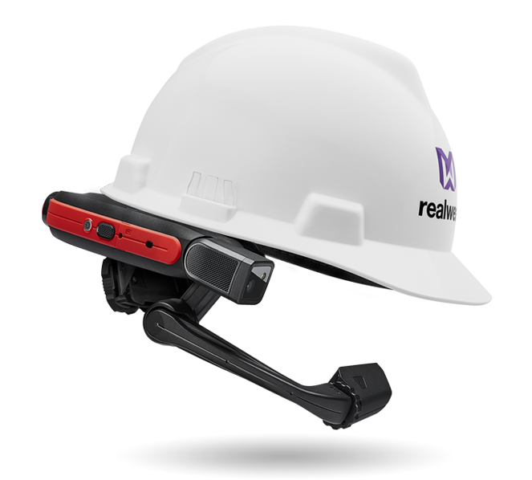
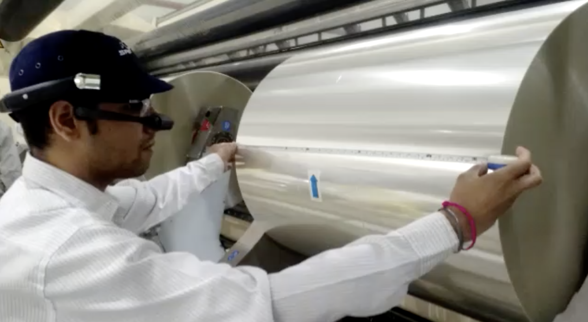
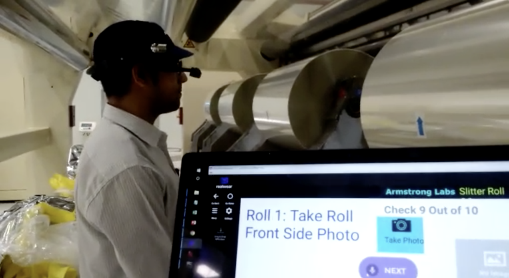
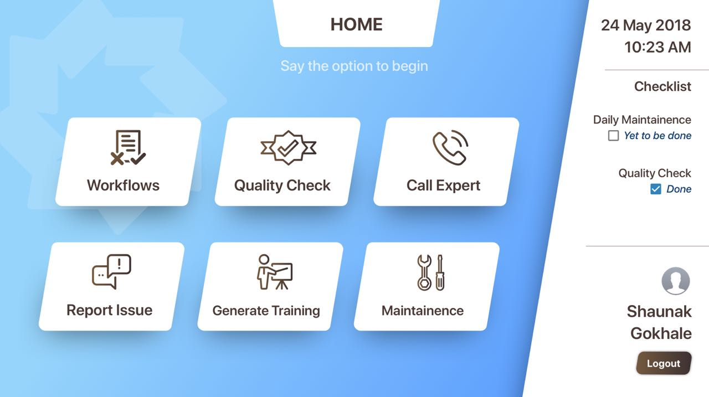
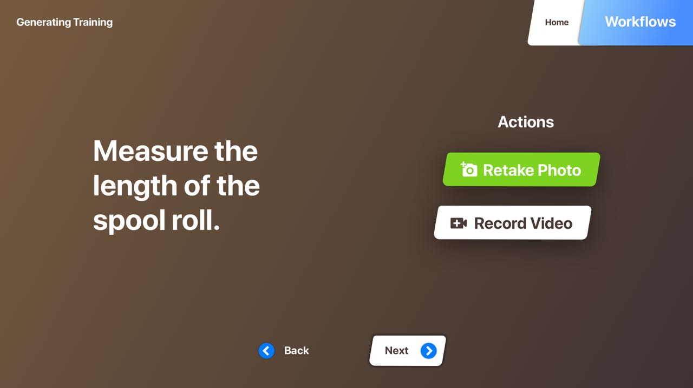
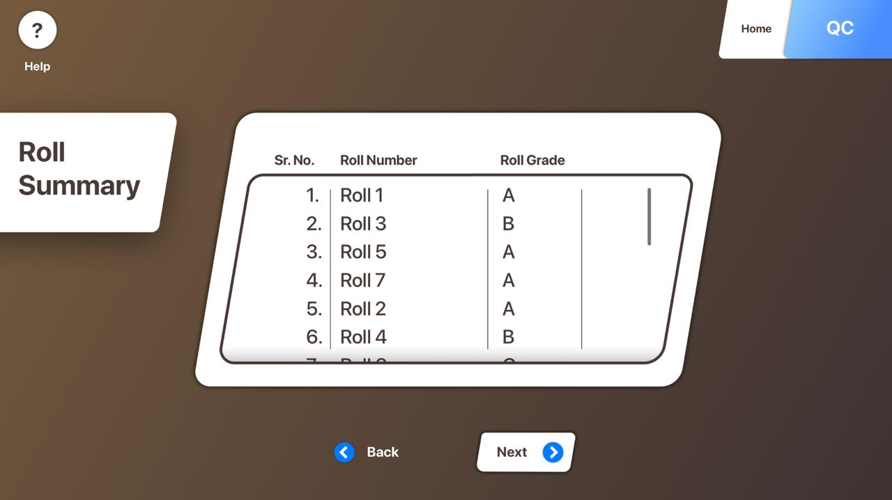
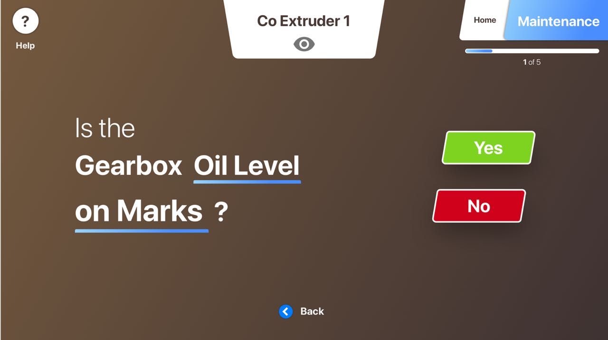
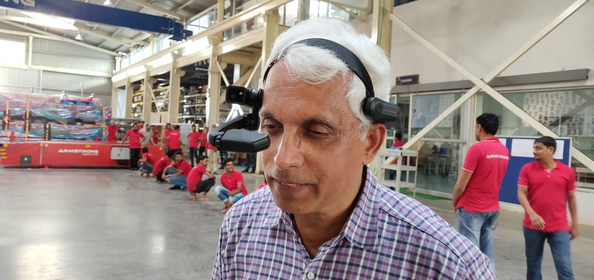
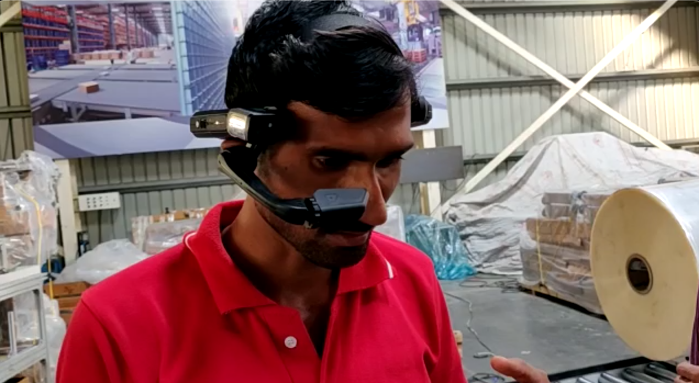
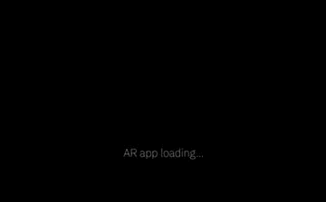

In the June of 2018, I was presented with an opportunity to design product interfaces for an industrial smart-glasses called RealWear. It’s a head mounted display designed to aid Industrial workers during critical steps. I had given the responsibility to design an experience for Quality check & Training procedures. The hardware is controlled by voice recognition. The users have to speak commands in order to interact.
Empathise
I travelled to the factory where the workers use the basic product, without a much designed app. Their primary concerns were a glaring to their eyes and irregular commands which were hard to remember. After getting to know how they use this wearable, I started paper prototyping.
User testing the Quality of Steel roll while wearing the smart glasses
Basic app for facilitating the empathise research.
Prototyping
For prototyping I used a combination of methods such as paper, Digital (Sketchapp) & Invision’s craft plugin for interactive elements.The idea was to create common UI elements that can be used across the apps. Following the brief, I created several such elements - Text Input, Heading, Title, Navigation button, common buttons, etc.
Home of the App
Voice controlled actions along with the highlight question.
Creation of a basic UI Element - skewed rectangle. It can be used everywhere.
Periodic maintenance screen - with previously used UI elements.
Testing
Initially, the product was tested in the company itself for further feedback. Later on, it was also tested in the ground where it is supposed to work. The reactions were gladly positive, and people liked the experience, with only one concern at hand, the buttons being a tad bit small. This was fixed in later deployments!
Testing the app in the home ground before showing it to the client.
Testing the app with the industrial workers in the client's factory.
Deployment
The app had been started to be developed along side the designing for a faster launch. In the month of July, the app got developed and delivered. It is now used by almost every factory worker in SRF Labs. With positive feedback and a growth in the efficiency, it stands as a true testament to wearables and UX.
Loading animation for the app. The logo is of the company that I worked in for creating this app.